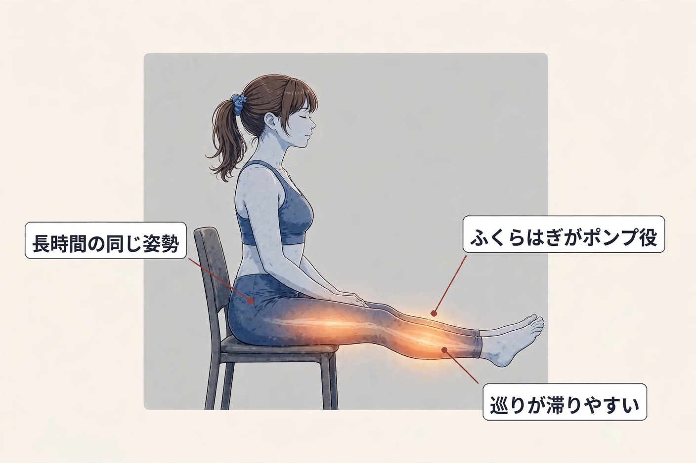
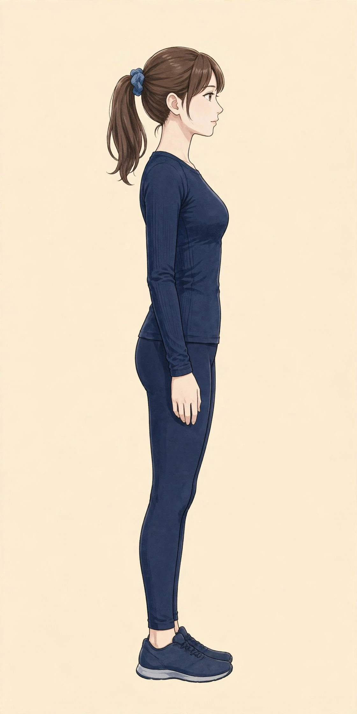

脚のむくみ・冷え
美容整体ステラ・ポラリス東三国｜大阪市淀川区東三国・東三国駅徒歩5分・女性向け

第二の心臓「ふくらはぎ」を活性化。整体×アロマ
脚は心臓から遠く、血液やリンパ液が重力に逆らって戻る必要があるため、むくみを感じやすい部位です。ふくらはぎの筋肉は「第二の心臓」とも呼ばれ、ポンプのように巡りを支えています。長時間の立ち仕事や座り仕事で筋肉が動きにくいと、夕方には脚が重く、靴がきつく感じることもあります。冷えを感じやすい方は、巡りの滞りとあわせて気になる方が多いお悩みです。このページでは、脚のむくみ・冷えの背景にある仕組みと、脚が軽やかに感じられる状態を目指す当サロンでのケア、ご自宅でできるセルフケアをご案内します。まずは下のチェックで、ご自身の状態を確かめてみてください。
ご予約はこちら（Coubic）こんなお悩みありませんか
- 夕方になると脚が重く、靴がきつく感じる
- 靴下の跡が、なかなか消えない
- ふくらはぎを押すと、へこみの戻りが遅い感じがする
- 足先が冷えて、夜なかなか温まらない
- 立ち仕事や座り仕事で、脚を動かす時間が少ない
- 朝と夕方で、脚の太さの感じが違う
- 脚のだるさで、仕事終わりの予定を入れる気になれない
当てはまる項目が多いほど、ふくらはぎのポンプ作用が働きにくく、巡りが滞りやすい状態の目安とされています。脚のむくみは、その日の過ごし方が表れやすい場所です。次のセルフチェックで、今の脚の状態の傾向を確かめてみましょう。
簡単セルフチェック（ふくらはぎチェック）
指で押してできる、脚のむくみの傾向を知るための簡単な方法です。
- 椅子に座り、すねの骨の内側を指で5秒ほど押します。
- 指を離して、へこみの戻り方を確認します。
- へこみがゆっくり戻る、靴下の跡が残りやすい場合は、脚の巡りが滞りやすい状態の目安と言われています。
※これは診断ではありません。ご自身の状態の傾向を知る目安としてお使いください。
脚のむくみ・冷えの原因と仕組み
重力と巡りの仕組み
脚は心臓から最も遠い場所にあり、血液やリンパ液は重力に逆らって上へ戻らなければなりません。この戻る力の中心になるのが、ふくらはぎの筋肉のポンプ作用です。歩いたり動いたりすることで筋肉が収縮し、巡りが押し上げられます。逆に、動かない時間が長いほど、余分な水分は脚にたまりやすくなります。図1のように、脚のむくみはふくらはぎの働きと、全身の巡りの状態とつながっています。

図1 脚のむくみで起こりやすい変化と、巡りが流れる脚のイメージ。脚の状態には個人差があります。
ふくらはぎのポンプ作用
ふくらはぎは「第二の心臓」とも呼ばれ、歩くたびに収縮して巡りを支えています。ところが、立ちっぱなしや座りっぱなしの仕事では、このポンプが十分に働く機会が減ります。筋肉そのものが固くなっていると、収縮の力も弱まりやすく、夕方の重さにつながります。ふくらはぎをやわらかく保つことは、巡りの土台を整えることです。
冷えとの関わり
体が冷えると血管が収縮し、巡りはさらに滞りやすくなると言われています。むくみと冷えは互いに強め合う関係にあり、足先の冷えを感じる方は、巡りの滞りも重なっていることが多いものです。脚を温めることは、巡りを促すうえでの基本のケアです。
同じ姿勢と生活習慣
長時間の立ち仕事・座り仕事、運動不足、水分や塩分のバランス、締めつけの強い靴下や靴など、日常の要素がむくみの強さに関わります。その日の過ごし方が夕方の脚に表れるからこそ、毎日の小さなケアの積み重ねが大切です。仕事終わりの脚の重さを「いつものこと」と諦めずに、巡りの土台から見直していきましょう。
セルフケアで足りる場合・サロンケアが向く場合
むくみが軽く、歩いたり温めたりしたあとに脚が軽くなる日が多い場合は、まずご自宅でのセルフケアを続けて様子を見る方法があります。一方で、ふくらはぎが固くて自分ではゆるめにくい、夕方の重さが毎日続いている、冷えも含めて全身の巡りから整えたいという場合は、サロンでのケアが向いている目安になります。サロンでは、足先から太ももまで巡りを流すイメージで丁寧にケアし、骨盤や脚全体のバランスも確認することで、施術後に「靴が履きやすくなった」と感じやすい脚の軽やかさを目指します。どちらが正解というものではなく、今の状態に合わせて選ぶことが大切です。
当サロンでのケア
当サロンの脚のむくみケアは、「ふくらはぎのポンプが働きやすい、巡りのよい脚」を目指す組み立てです。香りのよいオイルに包まれながら、部位と目的に合わせて3つの手技を組み合わせます。
アロマオイルマッサージ：足先から太ももまで、巡りを流すイメージで丁寧にケアします。香りのよいオイルに包まれながらの施術は、リラックスの時間としても好評です。
もみほぐし：ふくらはぎや足裏をしっかりとゆるめ、ポンプ作用が働きやすい状態を目指します。
美容整体：骨盤や脚全体のバランスを確認し、巡りの土台となる姿勢を整えることを目的に進めます。
ケアを通して目指すのは、こんな変化です。
- 脚が軽やかになり、靴が履きやすくなったような感覚へ
- ふくらはぎがやわらかくなり、ポンプが働きやすい状態へ
- 足先まで温かく、巡りがよくなったような体感へ
- 夕方の重さが気になりにくい、仕事終わりが楽な脚へ
- 脚のラインがすっきり見える印象へ
施術後は、靴が履きやすくなったような脚の軽やかさを目指します。施術の前後で脚の感覚を一緒に確認し、ご自宅で続けやすいふくらはぎの動かし方もご案内します。香りのよいオイルに包まれる時間は、脚のケアとリラックスを兼ねたひとときです。

施術の流れ
ご来店後、気になる部位やお悩み、ご希望の強さなどをうかがいます。完全個室のため、周りを気にせずお話しいただけます。
ふくらはぎの張りや脚の巡りの状態、骨盤のバランスなどを一緒に確認し、その日の状態に合わせた施術の進め方をご案内します。
美容整体を中心に、ご希望に応じてアロマオイルマッサージ、もみほぐしを組み合わせて進めます。強さは途中でも調整できます。
施術後の状態を確認し、ご自宅で続けやすいセルフケアのポイントをお伝えします。次回の目安についても、ご希望があればご案内します。
料金
| コース | 通常価格 | キャンペーン価格（12/25まで） |
|---|---|---|
| 80分 | ― | 3,000円 |
| 100分 | 10,000円 | 4,000円 |
| 120分 | ― | 5,000円 |
クリスマスキャンペーンは12月25日まで、ご新規様もリピーターの方も対象です。施術内容は当日の状態とご希望に合わせて組み立てます。
ご自宅でできるセルフケア
- かかとの上げ下げ：立ったまま、かかとをゆっくり上げ下げします。20回を1セットとして、仕事の合間や歯磨きの時間に取り入れるのが目安です。ふくらはぎのポンプを動かす基本の動きです。
- 足首回し：椅子に座って片足を浮かせ、足首を大きく回します。左右各10回、デスクワークの合間に行ってください。
- 脚を温める：入浴で脚全体を温める、レッグウォーマーで足首を冷やさないなど、温める工夫を日常に取り入れます。
- 脚を高くして休む：夜、クッションの上に脚を乗せて10分ほど休みます。1日の終わりのリセット習慣としておすすめです。
ご自宅でのケアに：セルフケア資料ライブラリ（無料）
このお悩みに合わせたセルフケアの考え方を、無料の資料ライブラリでご紹介しています。
セルフケア資料ライブラリを開く →
受診の目安
片脚だけの急な腫れや痛み、息苦しさを伴う場合は、すぐに医療機関を受診してください。また、むくみが長期間続く場合や、体のほかの部位のむくみも伴う場合も、医療機関でご相談ください。
よくある質問
Q. 初めてでも大丈夫ですか？
はい。当サロンは完全予約制・完全個室で、1日3組までのご案内です。最初にカウンセリングで脚の状態や気になる部位をうかがい、無理のない内容から始めます。施術の前後で脚の感覚を確認しながら「脚が軽くなった」「靴が履きやすい」といった違いを一緒に確かめますので、初めての方も安心してご利用いただけます。
Q. 施術は痛いですか？
強さは、ご希望をうかがいながら調整します。ふくらはぎは心地よい圧でほぐれる部位ですが、張りが強い場合は最初に圧を感じることがあります。感じ方には個人差がありますので、施術中も遠慮なくお声がけください。
Q. コースはどう選べばいいですか？
80分・100分・120分のコースがあり、ケアしたい部位の広さやお時間のご都合に合わせて選べます。脚のむくみのケアで足先から太もも、骨盤まわりまでゆっくり整えたい方には、100分が選ばれることが多いコースです。迷われる場合は、ご予約の際にお気軽にご相談ください。
Q. 場所と予約方法を教えてください。
大阪市淀川区東三国、東三国駅から徒歩5分です。完全予約制のため、予約サイト（Coubic）またはLINE公式アカウントからご予約をお願いしています。
Q. 男性も受けられますか？
当サロンは女性向けのため、男性の方は、同じ東三国の男性専用整体院「北辰堂」をご案内しています。
施術者について
平賀建人（施術歴30年）
鍼灸師・登録販売者・アロマセラピスト・パーソナルトレーナーの資格を持ち、美容整体を中心に、アロマオイルマッサージ、もみほぐしを、その日の状態とご希望に合わせて組み合わせて施術します。このページの内容は、施術者の知識と経験をもとに作成しています。

料金・ご予約
ご新規様もリピーターの方も 12/25まで
80分 3,000円／100分 4,000円／120分 5,000円
通常価格は100分10,000円です。施術内容はご希望に合わせて組み立てます。
営業時間：月〜土 17:00〜23:00／日 10:00〜23:00（完全予約制）｜電話：080-2468-3086
大阪府大阪市淀川区東三国2丁目25番4号101（東三国駅徒歩5分）